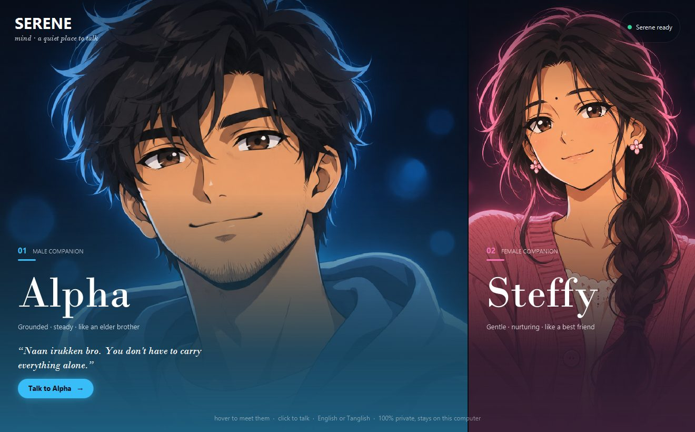
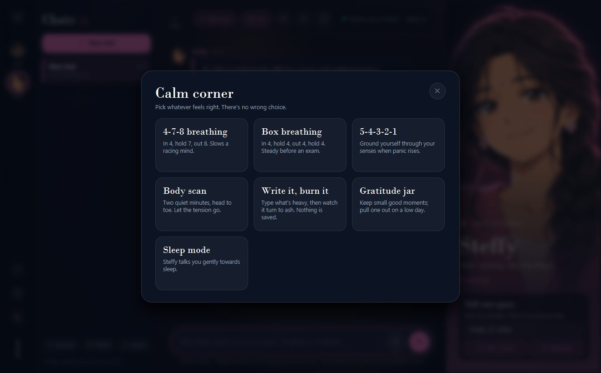

02 · Wellness companion, own model
Serene Mind AI
A private, offline companion for college students who need someone to talk to. Two caring companions speak English or Tanglish, run on my own fine-tuned model, and every reply is checked for safety before you see it.
Built by Adithya V, computer science student at KCT, Coimbatore.


About Serene Mind AI
Serene Mind AI is a desktop companion for students who need someone to talk to about exams, sleep, loneliness or a heavy day. You choose Alpha, grounded like an elder brother, or Steffy, gentle like a best friend, and talk in English or Tanglish.
Replies come from Serene_ryuu_v1, my own Llama-3 8B model fine-tuned with LoRA on 266 chats to answer calmly, keep healthy boundaries and never name medicines or diagnoses. Word rules and a second AI judge, qwen3:8b, read every reply before you see it, and crisis words open a directory of Indian helplines at once.
Around the chat sit a daily mood check-in, a 14-day journey view, short memory notes you can see and delete, voice in and out, and a calm corner with breathing, grounding, a body scan and a sleep mode. Everything runs offline with no account and no server. Serene is not a doctor or a crisis service, and it says so.
Related work

More projects by Adithya V
- TQQ ChatboxFive fine-tuned models, one app
- Ryuu Explainer AIOffline AI assistant
- Ryuu Hostel Management SystemWeb system, live demo
- KCT IDEA Lab websiteCollege website, built solo
- Ryuu AniverseCharacter chat, 100 characters
- Personality AICharacter chatbot
- Ryuu SmartPickupStartup prototype
- PawFinderWeb platform, live
- Automobile LabHardware and web interface
- CS GPT for CBSE 11 & 12Learning tool
- Ryuu v1 modelsSix open models